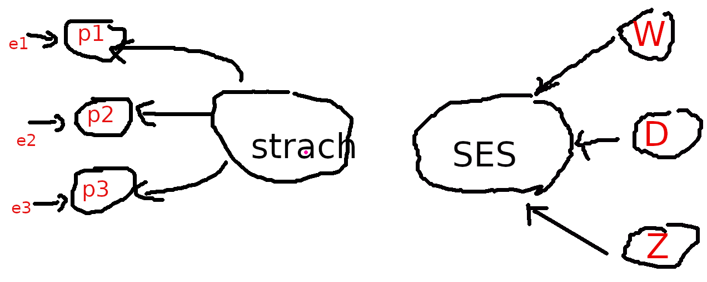
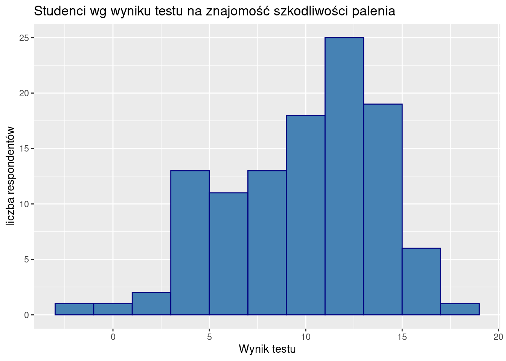
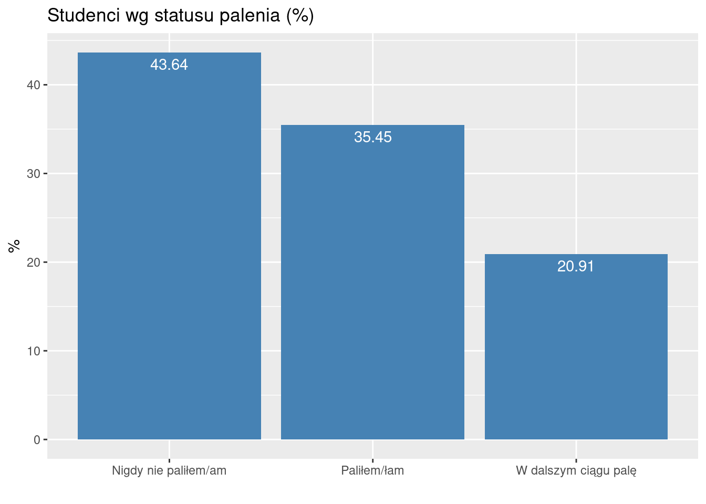
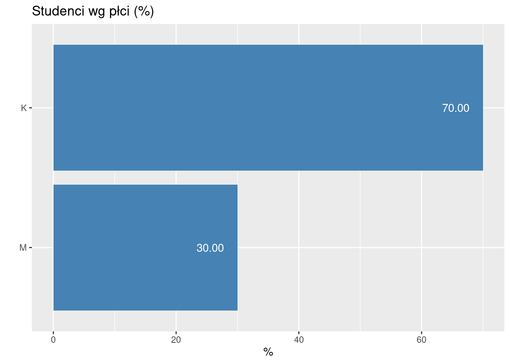
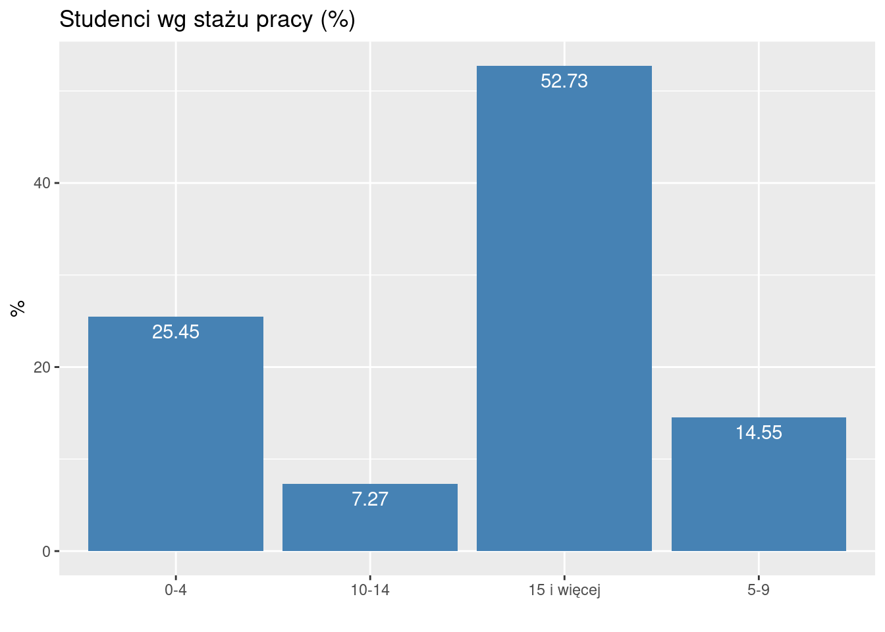
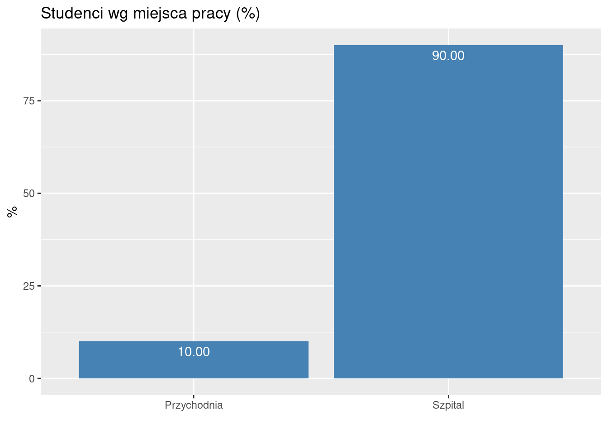
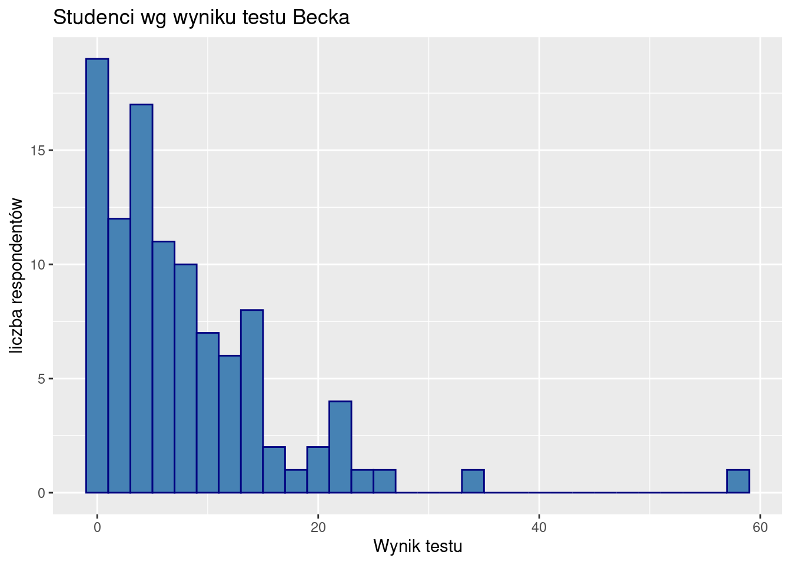
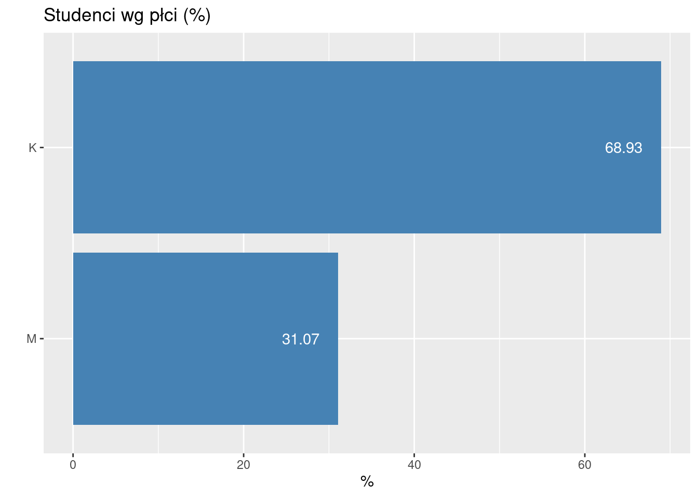
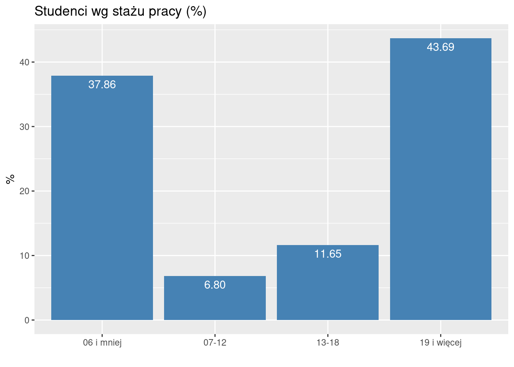
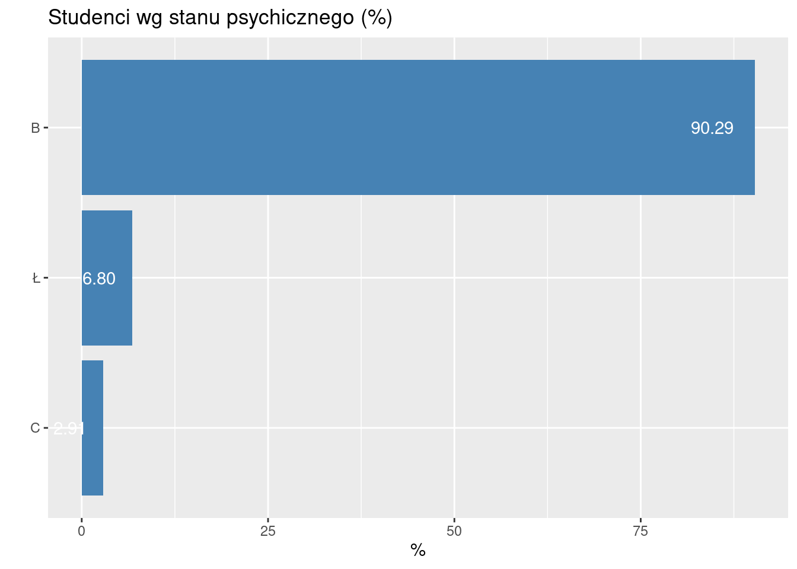

5 Przykłady badań ankietowych
Uwaga: ankieta nie jest kolejną metodą statystyczną tylko techniką zbierania danych. Wszystkie metody już zostały przedstawione i żadna nowe nie będzie.
5.1 Jak zacząć badanie?
Każde w tym ankietowe.
Należy zastanowić się nad trzema sprawami:
- Co chcemy ustalić?
- Jakie dane są nam potrzebne żeby ustalić to co chcemy ustalić.
- Jak te dane zebrać (czyli co i w jaki sposób zmierzyć)
5.1.1 Co chcemy ustalić?
Najlepiej jakąś zależność. Na przykład: Stress a wypalenie zawodowe; satysfakcja zawodowa a retencja; determinanty satysfakcji zawodowej
Może być od biedy opis czegoś lub porównanie czegoś z czymś. Przykłady: nadwaga wśród studentów wydziału zdrowia PSW; Analiza porównawcza wypalenia zawodowego pielęgniarek pracujących w różnych systemach opieki.
5.1.2 Co i jak mamy mierzyć?
Jeżeli mamy zamiar badań nadwagę, to powinniśmy zmierzyć masę ciała. Jeżeli celem jest ustalenie zależności pomiędzy stresem a wypaleniem zawodowym to niewątpliwie powinniśmy zmierzyć stress i wypalenia. Jak dotąd banalnie prosto. Problem zaczyna się w momencie odpowiedzi na pytanie jak
5.1.3 Mierzenie twardych faktów vs mierzenia przekonań
Możemy pytać w ankiecie o dwie rzeczy:
Fakty (wiek, staż, zawód, tętno, przebyte choroby)
Przekonania, Wartości, Postawy; Uczucia (strach / radość) albo Zamiary (w języku Attitudes/Emotions/Intentions)
Mierzenie faktów nie wymaga dodatkowych objaśnień. Problem jest z mierzeniem przekonań.
Przekonanie to idea, którą jednostka uważa za prawdziwą. Wartości to trwałe przekonania o tym, co jest ważne dla jednostki. Stają się standardami, według których jednostki dokonują wyborów. Postawy to mentalne dyspozycje/nastawienie przed podjęciem decyzji, które skutkują określonym zachowaniem (zrobię to a nie tamto). Postawy kształtowane są wartościami i przekonaniami.
5.1.4 Pomiar przekonań, wartości i postaw
Postawy/uczucia/zamiary są to pojęcia abstrakcyjne. Często (albo zawsze) definiowane w obszarze psychologii, nauk o zarządzaniu itp.
Pomiar przekonań jest dokonywany w specyficzny sposób. Definicja koncepcyjna definiuje pojęcie (zaufanie do kogoś/czegoś to przekonanie, że działania tego kogoś/czegoś okażą się zgodne z naszymi oczekiwaniami; satysfakcja to uczucie przyjemności, zadowolenia z czegoś; samoskuteczność to przekonanie, iż jest się w stanie zrealizować określone działanie lub osiągnąć wyznaczone cele). Definicja operacyjna określa jak zmierzyć pojęcie (jak zmierzyć satysfakcję) Przejście od DK do DO bywa czasami mocno, hmm… arbitralne.
5.1.5 Skala Likerta
Przykładowo chcemy się dowiedzieć czy i jak bardzo respondenci boją się COVID19.
W najprostszej wersji się po prostu pytamy: Czy pan/pani boi się COVID19? i dajemy respondentowi trzy możliwe warianty odpowiedzi: Tak/Nie/Nie wiem.
Może też być pięć wariantów: bardzo się boję–boję się–ani/ani–nie boję się–zupełnie się nie boję.
Taką skalę pomiarową określamy jak wiemy jako porządkową. Pomiary nie są liczbami ale są uporządkowane. Rangi wartości są już liczbami (np 1–5 w drugim przykładzie), można je np. uśredniać Tego typu skala pomiarowa, typowa dla ankiet, nosi nazwę skali Likerta. Można sobie wymyślać skalę Likerta 7-punktową i więcej.
Moim zdaniem powyżej 7 wariantów normalny respondent będzie miał problem czy się bardziej-bardziej czy bardziej-bardziej-bardziej boi.
5.1.6 Skala pomiarowa/inwentarz/kwestionariusz
Ponieważ skala Likerta jest zgrubna to uważa się powszechnie że lepszy wynik da pomiar wielokrotny. W naukach podstawowych mierzymy (np. linijką) parę razy, a wynik uśredniamy co daje pomiar bardziej precyzyjny tutaj pytamy się parę razy o to samo co ma dać podobny efekt (mniejszy średni błąd pomiaru). Taka seria pytań nosi też nazwę skali albo inwentarza.
Nie pytamy się zatem Czy pan/pani boi się COVID19? tylko zadajemy serię pytań o strach względem COVID19.
I am most afraid of Corona
It makes me uncomfortable to think about Corona
My hands become clammy when I think about Corona
I am afraid of losing my life because of Corona
When I watch news and stories about Corona on social media, I become nervous or anxious.
I cannot sleep because I’m worrying about getting Corona.
My heart races or palpitates when I think about getting Corona
albo:
Boję się koronawirusa
Czuję dyskomfort, gdy myślę o koronawirusie
Pocą mi się dłonie, gdy myślę o koronawirusie
Boję się, że mogę stracić życie z powodu koronawirusa
Gdy oglądam wiadomości i czytam o koronawirusie w mediach społecznościowych, robię się nerwowy i niespokojny
Nie mogę spać, ponieważ martwię się, że ja lub moi bliscy zarażą się
Dostaję palpitacji serca, gdy myślę o tym, że mógłbym się zarazić.
Odpowiadający ma do wyboru pięć wariantów odpowiedzi: zdecydowanie nie/nie/nie mam zdania/tak/zdecydowanie tak
The Fear of COVID-19 Scale: Development and Initial Validation. International Journal of Mental Health and Addiction, 1–9. https://www.ncbi.nlm.nih.gov/pmc/articles/PMC7100496/
Fear of COVID-19 Scale (FCV-19S) across countries: Measurement invariance issues https://onlinelibrary.wiley.com/doi/10.1002/nop2.855
Fear of COVID-19, psychological distress, work satisfaction and turnover intention among frontline nurses https://onlinelibrary.wiley.com/doi/full/10.1111/jonm.13168
Lęk przed koronawirusem COVID-19 i lęk przed śmiercią – polskie adaptacje narzędzi https://www.termedia.pl/Fear-of-COVID-19-and-death-anxiety-Polish-adaptations-of-scales,116,44937,1,1.html
5.1.7 Model pomiaru
Ukryty czynnik (strach) kształtuje wartości indykatorów (odpowiedzi na pytania) Taki sposób pomiaru ukrytego czynnika (latent w języku) określa się mianem refleksyjnego (co jest kalką od reflexive). Na rysunku kierunek strzałki obrazuje zależność (czynnik→indykator)

Alternatywny sposób definiowania ukrytego (w pewnym sensie, raczej złożonego) czynnika nosi nazwę formatywnego (albo indeksu): czynnik jest sumą indykatorów. Przykładem może być SES: status socjo-ekonomiczny będący agregatem wykształcenia (W), dochodu (D) oraz zawodu (Z).
W założeniu indykatory są jednakowo dobrymi miarami czynnika refleksyjnego i jako takie powinny być mocno skorelowane (mierzą to samo). Natomiast składniki czynnika formatywnego nie powinny być skorelowane, raczej każdy powinien mierzyć inny aspekt czynnika. Ktoś może być profesorem za przeproszeniem filozofii, nie mieć pracy i kiepskie dochody. Tylko jeden z trzech aspektów podwyższa mu SES; albo świetnie zarabiająca prostytutka bez matury.
Jeżeli w czynniku refleksyjnym pominiemy jeden z trzech indykatorów to nic się nie stanie oprócz tego że pomiar będzie mniej precyzyjny. Jeżeli w czynniku formatywnym pominiemy indykator to popełniamy gruby błąd bo pomijamy jeden istotny składnik całości.
Dobrą wiadomością jest, że najprostszy sposób pomiaru traktuje czynniki refleksyjne i formatywne jednakowo: wartością czynnika jest suma wartości indykatorów. Jeżeli indykatory są mierzone za pomocą skali Likerta suma rang po prostu. W skali strachu przed COVID ten kto się najbardziej boi powinien odpowiedzieć 7 razy zdecydowanie tak co odpowiada sumie 35 rang (jeżeli rangujemy od 1 do 5). Ten który się wcale nie boi zaś 7.
Małym utrudnieniem mogą być pytania odwrócone. Jeżeli pytamy o strach przed COVID i w każdym pytaniu jak bardzo ktoś się boi, albo jak bardzo mu serce bije, ale w jednym z pytań zapytamy nie boję się COVID To ranga 5 odpowiada uczuciu braku strachu. Rangi w pytaniach odwróconych należy przeliczyć (odwrócić): 1 zamienić na 5, 2 na 4 itd… Jeżeli używamy cudzych skal to w opisie powinno być wskazane które pytania są odwrócone.
Zalecany schemat postępowania jeżeli w ankiecie mają być mierzone przekonania (strach, samoskuteczność, wypalenie zawodowe, stress czy satysfakcja):
Dokształcamy się nieco z psychologii mimo wszystko
Robimy przegląd literatury i znajdujemy skalę, którą ktoś już wymyślił żeby to mierzyć; raczej nie należy wymyślać własnych skal.
Robimy ankietę (w Internecie) i zbieramy dane
Wykonujemy analizę statystyczną
Banalnie proste
5.2 Przykład 1: Wiedza na temat szkodliwości palenia i jej uwarunkowania wśród studentów PSW
5.2.1 Cel
Celem jest ocena wielkości zjawiska palenia tytoniu oraz poziom wiedzy na temat szkodliwości palenia tytoniu wśród studentów RM/PO PSW oraz zweryfikowanie wpływu wybranych czynników warunkujących na ten nałóg.
Postawiono następujące hipotezy badawcze
jaka jest wielkość zjawiska palenie tytoniu wśród studentów PSW?
jaka jest wiedza na temat szkodliwości palenia tytoniu wśród studentów PSW?
czy palenie jest skorelowane z płcią, stażem pracy i miejscem pracy?
czy wiedza na temat szkodliwości palenie jest skorelowana z płcią, stażem pracy i miejscem pracy?
czy palenie jest skorelowane z wiedzą na temat szkodliwości palenia?
5.2.2 Metoda
Badanie ankietowe wśród studentów RM oraz PO przeprowadzono w styczniu 2023. Ankieta zawierała pytania dotyczące palenia tytoniu (pali/nie pali/palił, jak długo pali itd), test wiedzy na temat szkodliwości palenia oraz pytania o rodzaj miejsca pracy, staż pracy i płeć itd.
Pięć następujących pytań oceniało wiedzę ankietowanego:
- Uważasz, że bardziej szkodliwe dla zdrowia jest (JW),
- Jakie według Ciebie choroby układu oddechowego mogą być spowodowane bezpośrednio przez palenie papierosów?
- Czy palenie papierosów powoduje choroby układu pokarmowego? (JW)
- Jakie według Ciebie choroby kardiologiczne mogą być spowodowane bezpośrednio przez palenie papierosów? Jaki według Ciebie ma wpływ palenie papierosów na narządy zmysłów? (wielokrotnego)
W przypadku pytań jednokrotnego wyboru, za wskazanie poprawnej odpowiedzi respondent otrzymywał 1 punkt. W przypadku pytań wielokrotnego wyboru za wskazanie prawidłowej odpowiedzi respondent otrzymywał 1 punkt, ale za wskazanie nieprawidłowej otrzymywał (minus) -1 punkt (aby nie opłacała się strategia zaznaczenia wszystkich odpowiedzi). Maksymalna możliwa do uzyskania liczba punktów wynosiła 19.
5.2.3 Zastosowane metody statystyczne
Hipotezę 1. oceniono na podstawie odsetka respondentów palących
Hipotezę 2. oceniono na podstawie odsetka respondentów wykazujących się dobrą i bardzo dobrą wiedzą na temat palenia
Hipotezę 3–5 zweryfikowano z wykorzystaniem tablic korelacyjnych/testu chi-kwadrat oraz porównania średniego poziomu depresji w grupach za pomocą testów Manna-Whitneya oraz Kruskalla-Wallisa
5.2.4 Metryczka (analiza respondentów)

W badaniu wzięło udział 110 studentów. Otrzymano 110 poprawnie wypełnionych ankiet. Średnia wartość testu oceniającego wiedzę wyniosła 10.3636364 (odchylenie standardowe 3.9970798)
Rozkład ankietowanych ze względu na status względem palenia przedstawiono na rysunku

Rozkład ankietowanych ze względu na płeć przedstawiono na rysunku

Rozład ankietowanych ze względu na staż pracy przedstawiono na rysunku

Rozkład ankietowanych ze względu na rodzaj miejsca pracy przedstawiono na rysunku

5.2.5 Weryfikacja hipotezy 1
Palą lub paliło 62 respondentów ( 56 %). Żeby stwierdzić czy to jest dużo czy mało to np. można by porównać z jakąś średnią ogólnopolską.
5.2.6 Weryfikacja hipotezy 2
Średnia wartość uzyskana w teście wyniosła 10.3636364 (mediana 11); 3/4 respondentów nie uzyskało więcej niż 13 (czyli 68.4 %)
5.2.7 Weryfikacja hipotez 3–5
Czy palenie jest skorelowane z płcią?
| K | M | |
|---|---|---|
| Nigdy nie paliłem/am | 31 | 17 |
| Paliłem/łam | 27 | 12 |
| W dalszym ciągu palę | 19 | 4 |
##
## Pearson's Chi-squared test
##
## data: t.sex.f
## X-squared = 2.4228, df = 2, p-value = 0.2978Nie jest o czym świadczy wysoka wartość p (0.2977764)
Czy palenie jest skorelowane ze stażem pracy?
| 0-4 | 10-14 | 15 i więcej | 5-9 | |
|---|---|---|---|---|
| Nigdy nie paliłem/am | 14 | 4 | 24 | 6 |
| Paliłem/łam | 8 | 2 | 23 | 6 |
| W dalszym ciągu palę | 6 | 2 | 11 | 4 |
##
## Pearson's Chi-squared test
##
## data: t.staz.f
## X-squared = 1.7687, df = 6, p-value = 0.9397Nie jest o czym świadczy wysoka wartość p (0.9396967)
Czy palenie jest skorelowane z miejscem pracy?
| Przychodnia | Szpital | |
|---|---|---|
| Nigdy nie paliłem/am | 5 | 43 |
| Paliłem/łam | 3 | 36 |
| W dalszym ciągu palę | 3 | 20 |
##
## Pearson's Chi-squared test
##
## data: t.praca.f
## X-squared = 0.47674, df = 2, p-value = 0.7879Nie jest o czym świadczy wysoka wartość p (0.7879097)
Czy wiedza na temat palenia jest skorelowana z płcią:
| płeć | średnia | n |
|---|---|---|
| K | 10.831169 | 77 |
| M | 9.272727 | 33 |
## $p.value
## [1] 0.04883299Porównujemy dwie grupy zatem stosujemy test Manna-Whitneya. Wartość p wynosi 0.048833 – nie ma podstaw od odrzucenia hipotezy o braku korelacji na poziomie 0,05 (ale na poziomie 0,1 już byśmy mogli przyjąć że takowa korelacji istnieje)
Czy wiedza na temat palenia jest skorelowana z miejscem pracy:
| m.pracy | średnia | n |
|---|---|---|
| Przychodnia | 10.36364 | 11 |
| Szpital | 10.36364 | 99 |
## $p.value
## [1] 0.8026325Porównujemy dwie grupy zatem stosujemy test Manna-Whitneya. Wartość p wynosi 0.8026325 – nie ma podstaw od odrzucenia hipotezy o braku korelacji na poziomie 0,05.
Czy wiedza na temat palenia jest skorelowana ze stażem:
| staż | średnia | n |
|---|---|---|
| 0-4 | 9.928571 | 28 |
| 10-14 | 9.875000 | 8 |
| 15 i więcej | 10.793103 | 58 |
| 5-9 | 9.812500 | 16 |
## $p.value
## [1] 0.6771844Porównujemy więcej niż dwie grupy zatem stosujemy test Kruskalla-Wallisa. Wartość p wynosi 0.6771844 – nie ma podstaw od odrzucenia hipotezy o braku korelacji na poziomie 0,05.
Czy wiedza o szkodliwości palenia jest skorelowana ze statusem względem palenia? Chcemy zastosować tablicę wielodzielczą/test chi kwadrat. Musimy zatem zamienić skalę liczbową zmiennej mierzącej wiedzę nt szkodliwości palenia na nominalną, np tak: 0–5 mała; 6–10 średnia; 11–15 duża, 16–19 ogromna:
| Nigdy nie paliłem/am | Paliłem/łam | W dalszym ciągu palę | |
|---|---|---|---|
| duża | 22 | 16 | 14 |
| mała | 7 | 6 | 4 |
| ogromna | 2 | 3 | 2 |
| średna | 17 | 14 | 3 |
##
## Pearson's Chi-squared test
##
## data: wiedza.status.t
## X-squared = 4.9954, df = 6, p-value = 0.5444Widza i status wzg. palenia nie jest skorelowana o czym świadczy wysoka wartość p (0.544403)
Można to samo zweryfikować porównując średnie w grupach i stosując test Kruskalla-Wallisa
| status | średnia | n |
|---|---|---|
| Nigdy nie paliłem/am | 10.31250 | 48 |
| Paliłem/łam | 10.07692 | 39 |
| W dalszym ciągu palę | 10.95652 | 23 |
## $p.value
## [1] 0.7787663Wynik jest identyczny (wysoka wartość p 0.7787663)
5.2.8 Wnioski
Ponad połowa studentów pali lub paliła
Nie ma związku pomiędzy statusem względem palenia/wiedzą o szkodliwości palenia a płcią, miejscem pracy, stażem.
5.3 Przykład 2: Depresja i jej uwarunkowania wśród studentów PSW
5.3.1 Cel
Celem jest ustalenie czy depresja jest istotnym problemem wśród studentów RM/PO PSW oraz zweryfikowanie wybranych czynników warunkujących depresję.
5.3.2 Metoda
Badanie ankietowe wśród studentów RM oraz PO przeprowadzono w styczniu 2023. Ankieta zawierała test samooceny depresji Becka oraz pytania o rodzaj miejsca pracy, staż pracy i płeć.
Test samooceny depresji Becka składa się z 21 pytań. W każdym pytaniu możliwe są 4 warianty odpowiedzi, odpowiadające zwiększonej intensywności objawów depresji, którym w związku z tym przypisuje się od zera do 3 punktów. Maksymalna liczba punktów w teście wynosi 63 a minimalna 0.
Interpretacja wyników testu Becka 0–19 brak/łagodna depresja; 20–25 umiarkowana; 26–63 cieżka depresja.
Postawiono następujące hipotezy badawcze
depresja stanowi duży problem wśród studentów PSW
problem depresji zależy od miejsca pracy
problem depresji zależy od stażu pracy
problem depresji zależy od płci
Sposoby weryfikacji:
Hipotezę 1. oceniono na podstawie odsetka respondentów wykazujących ciężką postać depresji;
Hipotezę 2–4 zweryfikowano z wykorzystaniem tablic wielodzielczych/testu chi-kwadrat oraz porównania średniego poziomu depresji w grupach za pomocą testów Manna-Whitneya oraz Kruskalla-Wallisa
5.3.3 Metryczka
W badaniu wzięło udział 103 studentów. Otrzymano 103 poprawnie wypełnionych ankiet. Średnia wartość testu Becka wyniosła 8.3786408 (odchylenie standardowe 8.5773488)

5.3.4 Weryfikacja hipotezy 1

Ciężką postać depresji wykazuje zaledwie 3% studentów. Należy odrzucić hipotezę że depresja stanowi poważny problem wśród studentów RM/PO PSW.
5.3.5 Weryfikacja hipotez 2–4
Aby móc zastosować metody tablicy wielodzielczej i testu chi-kwadrat oryginalne wartości liczbowe depresji zamieniono na skalę porządkową: 0–19 brak/łagodna depresja (B); 20–25 umiarkowana (Ł); 26–63 ciężka depresja (C).
5.3.6 Depresja a płeć
Tablica wielodzielcza i test chi-kwadrat:
| K | M | |
|---|---|---|
| B | 64 | 29 |
| C | 2 | 1 |
| Ł | 5 | 2 |
##
## Pearson's Chi-squared test
##
## data: dep.sex.f
## X-squared = 0.028134, df = 2, p-value = 0.9865.3.7 Depresja a staż
Tablica wielodzielcza i test chi-kwadrat:
| 06 i mniej | 07-12 | 13-18 | 19 i więcej | |
|---|---|---|---|---|
| B | 36 | 6 | 9 | 42 |
| C | 1 | 0 | 1 | 1 |
| Ł | 2 | 1 | 2 | 2 |
##
## Pearson's Chi-squared test
##
## data: dep.staz.f
## X-squared = 4.719, df = 6, p-value = 0.5803albo jeżeli depresję mierzymy na skali liczbowej można porównać wartości średnie i zastosować test Kruskalla-Wallisa
| staż | średnia | n |
|---|---|---|
| 06 i mniej | 8.512821 | 39 |
| 07-12 | 7.857143 | 7 |
| 13-18 | 7.666667 | 12 |
| 19 i więcej | 8.533333 | 45 |
## $p.value
## [1] 0.678923Wynik jest ten sam (brak zależności)
5.3.8 Depresja a rodzaj miejsca pracy
Tablica wielodzielcza i test chi-kwadrat:
| Przychodnia | Szpital | |
|---|---|---|
| B | 12 | 81 |
| C | 0 | 3 |
| Ł | 0 | 7 |
##
## Pearson's Chi-squared test
##
## data: dep.praca.f
## X-squared = 1.4605, df = 2, p-value = 0.4818Albo jeżeli depresję mierzymy na skali liczbowej można porównać wartości średnie i zastosować test Manna-Whitneya
| m-pracy | średnia | n |
|---|---|---|
| Przychodnia | 7.833333 | 12 |
| Szpital | 8.450549 | 91 |
## $p.value
## [1] 0.8528214Wynik jest ten sam (brak zależności)
5.4 Wnioski
Depresja nie jest istotnym problemem wśród studentów RM/PO PSW
Nie ma związku pomiędzy depresją a stażem, płcią i miejscem pracy
5.5 Przykład 3:
W przygotowaniu na podstawie ankiety: https://docs.google.com/forms/d/1bgNMhPEJMjiWeLfrmEAnPpns5U7Rooc-KOaeS7XlLV0/edit